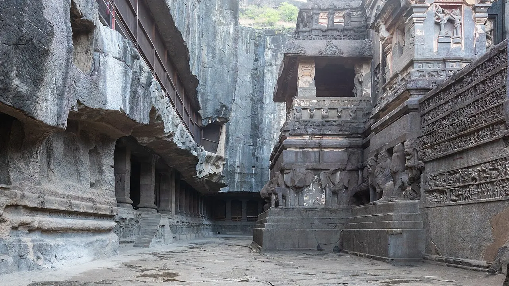

Places covered
Aurangabad → Ajanta → Ellora
Your day-by-day journey
Suggested itinerary. Attractions, travel times and arrangements are subject to your written quote and local conditions.
Day 1
Arrive in Aurangabad; transfer and check in after arrival. If time permits, see Bibi Ka Maqbara and Panchakki. Overnight in Aurangabad.
Day 2
Travel from Aurangabad to Ajanta; visit Ajanta Buddhist rock-cut caves. Admission, activity timings and accessibility are subject to local conditions. Overnight in Ajanta.
Day 3
Travel from Ajanta to Ellora; visit Ellora Caves and Kailasa Temple. Admission, activity timings and accessibility are subject to local conditions. Overnight in Ellora.
Day 4
After breakfast, check out and depart from Ellora. Departure transfer, road timing and any onward flight or train will be confirmed in the final quotation.
Before you travel
Accommodation, meals, transport, tickets, permits, inclusions and exclusions are confirmed only in your written quotation. Share accessibility needs, children's ages and your preferred pace when enquiring. Activities depend on weather, local access and availability.
Frequently asked questions
How long is the Ajanta Ellora Heritage itinerary?
The suggested Ajanta Ellora Heritage itinerary is 4 Days / 3 Nights.
Which places does the Ajanta Ellora Heritage itinerary cover?
The suggested route lists Aurangabad, Ajanta, Ellora.